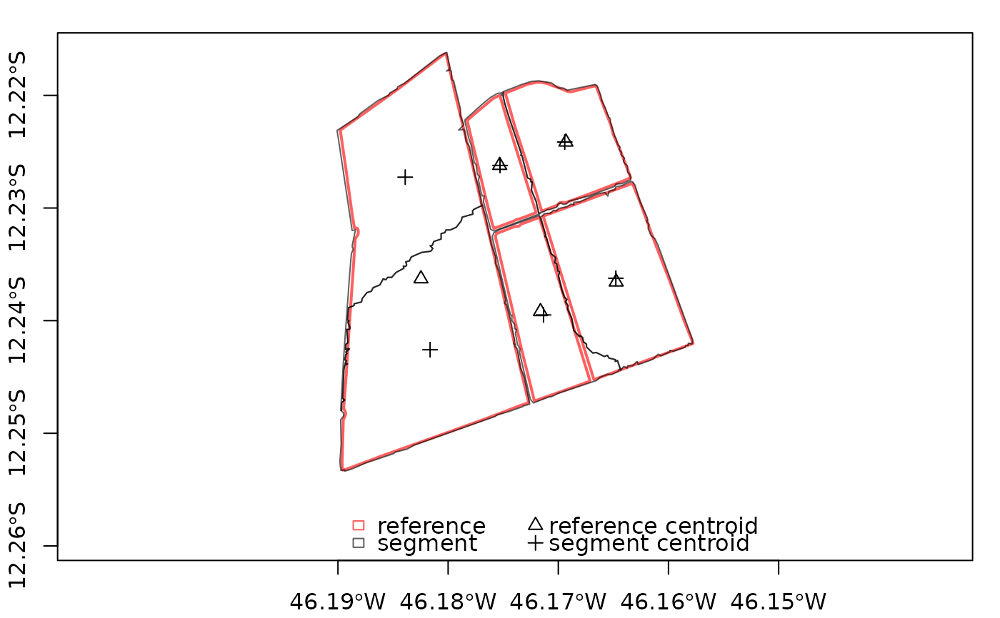

These functions manipulate segmetric objects.
sm_read(): Load the reference and segmentation polygons into segmetric.sm_clear(): Remove the already calculated metrics from segmetric.print(): Print a segmetric object.plot(): Plot the reference and segmentation polygons.summary(): Compute a measure of central tendency over the values of a metric.sm_is_empty(): Check if asegmetricobject is empty.
Usage
.segmetric_check(m)
.segmetric_env(m)
sm_read(ref_sf, seg_sf)
sm_clear(m)
# S3 method for segmetric
summary(object, weight = NULL, na_rm = TRUE, ...)
sm_is_empty(m)
# S3 method for segmetric
[(x, i)Arguments
- m
A
segmetricobject.- ref_sf
A
sfobject. The reference polygons.- seg_sf
A
sfobject. The segmentation polygons.- object
A
segmetricobject.- weight
Weights to summarize metrics. Accepts
characteroptions"ref","seg", and"inter", that weights using reference, segment, and intersection areas, respectively. Also accepts anumericvector of weights of the same length as input metrics giving the weights to be used.- na_rm
Should missing values (including
NaN) be removed?- ...
Additional parameters (Not implemented).
Value
sm_read(),sm_clear(): Return asegmetricobject containing an empty list and an environment attribute to store the necessary datasets.sm_is_empty(): Return alogicalvector indicating if each computed metric is empty.
Examples
# load sample datasets
data("sample_ref_sf", package = "segmetric")
data("sample_seg_sf", package = "segmetric")
# create segmetric object
m <- sm_read(ref_sf = sample_ref_sf, seg_sf = sample_seg_sf)
# plot geometries
plot(m)

# compute a metric
sm_compute(m, "AFI")
#> $AFI
#> [1] -0.004579302 -0.177491523 -0.065702379 -0.178723482 0.391009428
#>
# summarize the metric using mean
sm_compute(m, "AFI") %>% summary()
#> [1] -0.007097452
# clear computed subsets
sm_clear(m)
#> list()